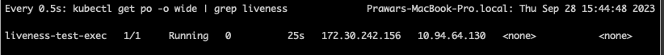
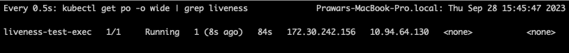

Health Checks in Kubernetes
Health check in kubernetes is performed in three major forms: (a). Liveness Check; (b). Readiness Check; (c). StartUp Probes.
Following contents are derived from the official Kubernetes documentation at this link .
-
Liveness Probes:
- Kubelet uses liveness probes to decide when to restart a container.
- Liveness probes can be used to catch a deadlock in a container.
-
Readiness Probes:
- Kubelet uses readiness probes to decide when the container is ready to accept traffic.
- A pod is considered ready when all the containers in the pod is ready.
-
Startup Probes:
- Kubelet uses startup probes to know when a container application has started.
- If a startup probe is configured, the liveness and readiness probe is started only after the startup probe succeeds
- Not starting liveness and startup probes until startup probe succeeds help especially in the case of slow starting containers. This prevents kubelet from killing hte containers before they are up and running.
Example Liveness Probe
Let us look at a simple example of liveness probe set up in a dummy pod that we will set up. But before that, we need to get familiar with a few terms:
- initialDelaySeconds: This is the duration in seconds kubelet waits before executing the command that is specified for liveness check.
- periodSeconds: This is the duration in seconds kubelet executes the command for liveness checks. For example, if the periodSeconds values is 5, kubelet exceutes liveness check every 5 seconds. If the command is unsuccessful, then it kills the container and restarts it.
Following definition of the pod that we are going to run is described from the kube documentation page .
apiVersion: v1 kind: Pod metadata: labels: test: liveness_test name: liveness-test-exec spec: containers: - name: my-test image: registry.k8s.io/busybox args: - /bin/sh - -c - touch /tmp/healthy; sleep 30; rm -f /tmp/healthy; sleep 600 livenessProbe: exec: command: - cat - /tmp/healthy initialDelaySeconds: 5 periodSeconds: 5
What this does is following:
- Pulls the busybox image
-
At the startup of the container,
- creates a file named /tmp/healthy .
- sleeps for 30s
- removes the file created 30s ago, i.e. /tmp/healthy
- sleeps for 600s
-
For the liveness check:
- Reads the file /tmp/healthy using cat command.
What ends up happening?
So the combination of the creation and deletion of the file after 30s causes the liveness probe to fail after 30s. This is because liveness probe succeeds (returns 0) when the file /tmp/healthy is available. After 30s of when the container starts to run, the file gets deleted. This causes the cat command to return non-zero value. This causes the liveness to fail, and thus the container gets restarted.
In action
- I save the description of the pod above to file named liveness_test.yaml .
-
In my kube cluster, I applied following command to create the pod based on the description in the file.
% kubectl apply -f liveness_test.yaml pod/liveness-test-exec created
-
I started a watch command to see the state of the pod created. Following is the watch command that I used.
% watch -n 0.5 "kubectl get po -o wide | grep liveness"
Following is the output see when the container is running properly. Watch for the 0 value in the restart column.
Following is the output see when the container is restarted after some time (i.e. when the liveness fails). Watch for the 1 value in the restart column.
Other ways of setting Liveness Probe
Using http request
A http server running inside the container can be configured to return http status codes to reflect the condition of the container. The kubelet can then probe the endpoint periodically to perform the liveness test. Any http value greater than or equal to 200 but less than 400 is a success. If the value is outside this range, the kubelet will kill the container and initiate the restart of container.
Following is an example of http based liveness check. It is derived from the kube documentation .
apiVersion: v1 kind: Pod metadata: labels: test: liveness name: liveness-http spec: containers: - name: liveness image: registry.k8s.io/liveness args: - /server livenessProbe: httpGet: path: /healthz port: 8080 httpHeaders: - name: Custom-Header value: Awesome initialDelaySeconds: 3 periodSeconds: 3
This forces the kubelet to perform a HTTP GET call every 3 seconds to the endpoint localhost:8080/healthz inside the container. If the value returned is greater than or equal to 200 and less than 400, the liveness check is considered successful.
There are other ways to do this as well. Please explore them in the kube documentation. For example; using TCP Port , kubelet can check if a port in a container is open or not. Similarly, using gRPC based liveness test, the health status can be queried using gRPC call to elsewhere.